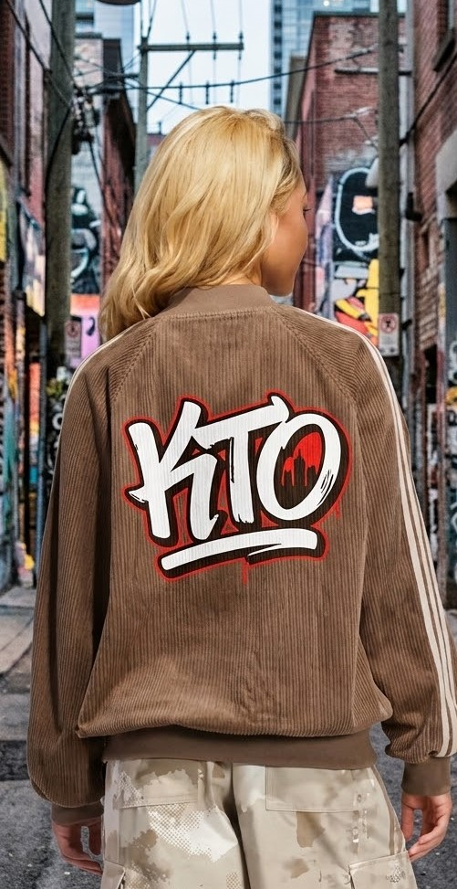
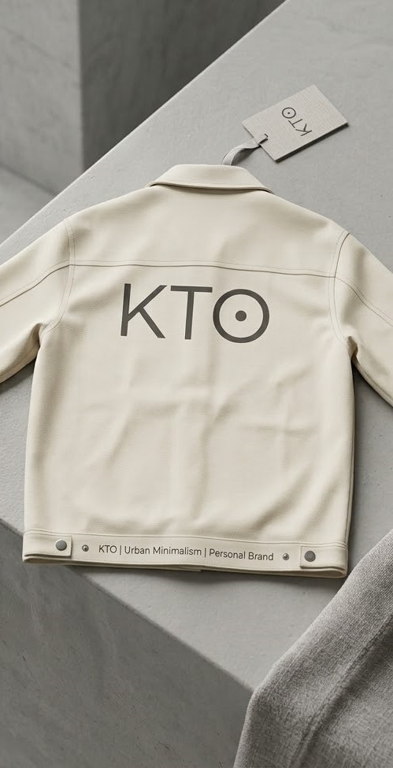

LA IDENTIDAD KTO
Menos ruido. Más estilo.
Diseñamos prendas urbanas con líneas simples, colores neutros y detalles que hacen la diferencia. KTO combina comodidad y personalidad para que cada persona encuentre su propia forma de expresarse.

Estética urbana
Prendas inspiradas en la calle, la música y la cultura urbana.

Diseño minimalista
Colores sobrios y diseños simples que combinan con distintos estilos.